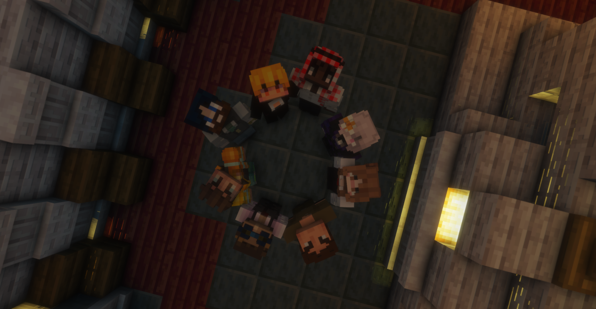

ÉLECTIONS DU CONSEIL DU 24 JUIN — 6 MEMBRES ÉLUSPAULINE EN TÊTE AVEC 18 VOIX — FRANCK MCLANE ÉLIMINÉ AVEC 3 VOIXLE NOUVEAU CONSEIL EST EN PLACE AUX CÔTÉS DE MR JANUKÉLECTIONS DU CONSEIL DU 24 JUIN — 6 MEMBRES ÉLUSPAULINE EN TÊTE AVEC 18 VOIX — FRANCK MCLANE ÉLIMINÉ AVEC 3 VOIXLE NOUVEAU CONSEIL EST EN PLACE AUX CÔTÉS DE MR JANUK
Les votes sont comptés. Six membres ont été élus pour siéger au Conseil aux côtés de Mr Januk. Voici les résultats officiels.
Par La Rédaction·Juin 2026·Politique
Dans la foulée de l'élection présidentielle qui a vu Mr Januk accéder à la tête de Karminéa, le Conseil a été élu le 24 juin. Les habitants ont été appelés aux urnes pour désigner les six représentants qui siégeront aux côtés du nouveau président.
🗳️
Scrutin du 24 juin 2026
20h00 — 23h00
Résultats annoncés à 23h30
🎯 Les candidats
Huit candidatures étaient en lice pour six sièges. Chaque habitant pouvait voter pour 3 candidats maximum. Voici la liste officielle des candidats :
01
MonteCarlo
Candidature individuelle
02
David Martinez
En soutien d'Hector Lonpiff
03
Vince Lance
En soutien de Kevin Bodin
04
Amaryllis
Candidature individuelle
05
Franck McLane
Candidature individuelle
06
Golden Sluje Belazur
Candidature individuelle
07
Pauline
En soutien de l'Association Slayyyyyy
08
Hanmā
Candidature individuelle
📋 Rappel — Mode d'emploi
Le vote par procuration
Les absents pouvaient envoyer un message privé Discord à un joueur connecté.
Le joueur rédigeait un livre in-game précisant qu'il s'agissait du vote de l'absent.
En cas de demande de preuve, le nom du candidat devait être caché.
Le joueur mandaté était autorisé à ne pas respecter le vote, mais devait impérativement voter au nom de l'absent.
⚠ Sous réserve de l'autorisation de Monsieur Janukstark
Je soussigné(e), [Pseudo et nom INRP], né(e) le [date de naissance] demeurant à KARMINEA ;
donne procuration à [Pseudo et nom INRP], né(e) le [date de naissance] demeurant à KARMINEA afin d'agir en mon nom pour voter pour le candidat suivant : [Pseudo et nom INRP] dans le cadre des élections du conseil.
Cette procuration est valable à compter d'aujourd'hui et jusqu'à aujourd'hui uniquement.
La rédaction du Karmine Déchaîné remercie tous les habitants pour leur participation. Le Conseil de Karminéa est désormais en place.
🗳️ Les résultats officiels
01
Pauline
En soutien de l'Association Slayyyyyy
18 voix
02
Amaryllis
Candidature individuelle
15 voix
03
David Martinez
En soutien d'Hector Lonpiff
14 voix
04
Vince Lance
En soutien de Kevin Bodin
13 voix
05
Hanmā
Candidature individuelle
10 voix
06
Golden Sluje Belazur
Candidature individuelle
8 voix
07
MonteCarlo
Candidature individuelle
6 voix
08
Franck McLane
Candidature individuelle
3 voix

Le nouveau Conseil de Karminéa réuni pour la première fois — une page s'ouvre.